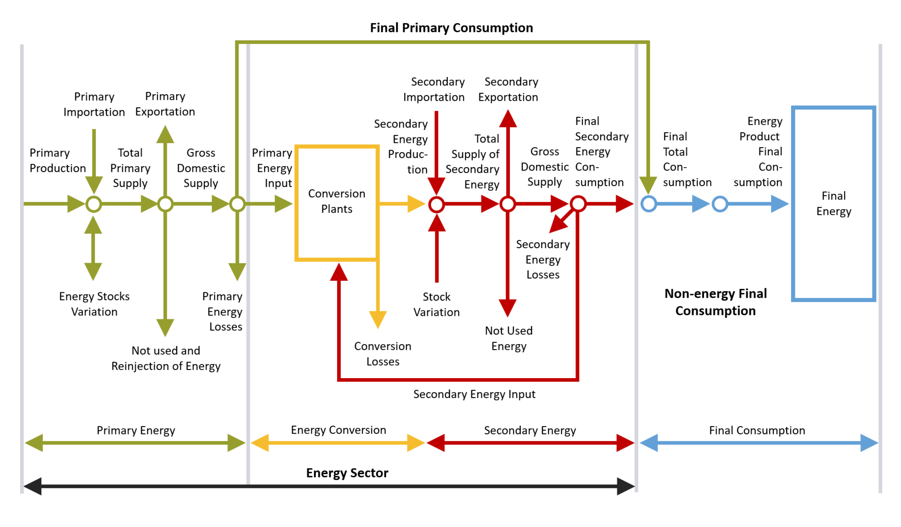

Primary Energy
Energy products found in nature in an immediately available form, such as natural gas, coal, animal and vegetable residues, solar and wind energy, etc.

The Brazilian Energy Balance – BEB has been prepared according to a methodology adopted to an energy structure sufficiently general in nature to give a proper configuration of the physical variables of the energy sector.
The Matrix Energy Balance summarizes the methodology and expresses the balance of every stage in the energy process: production, transformation and consumption.

The general structure of the balance is divided into four parts:
Primary Energy
Transformation
Secondary Energy
Final Consumption
Energy products found in nature in an immediately available form, such as natural gas, coal, animal and vegetable residues, solar and wind energy, etc.
Energy products obtained from the various transformation centers and channeled to the different consumption sectors or to other transformation centers.
All the energy produced, transformed and consumed in the country.
The amount of energy available for transformation and/or for f inal consumption.
The transformation sector includes all transformation centers where primary and/or secondary energy is processed by modification of its properties or original state.
Important notes regarding signs:
all primary or secondary energy put in transformation centers carries a negative sign.
all secondary energy produced by transformation centers carries a positive sign.
Listed below are the different economic sectors to which primary and secondary energy flows, making up total final energy consumption.
Device used to facilitate comparability of energy supply and consumption data from different statistical sources.
The adjustments to be introduced in each column (1 to 25) are calculated as follows:
*ADJUSTMENTS = GROSS DOMESTIC SUPPLY (-) TOTAL TRANSFORMATION (-) LOSSES IN DISTRIBUTION AND STORAGE (-) FINAL CONSUMPTION.
The adjustment is negative whenever gross domestic supply happens to be greater than the other items, and vice versa.
Equivalent to the sum of positive values of lines 9.1 to 9.10.
In the part referring to the energy sector (see matrix C1: production, imports, inventory withdrawals, exits from transformation centers) every quantity of energy that increases available energy in the country has a POSITIVE sign. Conversely, every amount that causes a decrease in available energy in the country has a NEGATIVE sign (increase in inventory, exports, non-utilized energy and re-injected energy, transformed energy, transformation losses and distribution and storage losses).
Finally, all data found in the section on final energy consumption are also negative. To simplify presentation, they are given as arithmetic quantities (without sign).
The energy flow of each source is shown by the following formula:
*TOTAL SUPPLY = PRODUCTION (+) IMPORTS (+) OR (-) VARIATION IN INVENTORIES
*GROSS DOMESTIC SUPPLY = TOTAL SUPPLY (-) EXPORTS (-) NON-UTILIZED (-) RE-INJECTION
Or:
*GROSS DOMESTIC SUPPLY = TOTAL TRANSFORMATION (+) FINAL CONSUMPTION (+) DISTRIBUTION AND STORAGE LOSSES (+) OR (-) ADJUSTMENTS.
It should be noted that production of secondary energy appears in the figure at the stage pertaining to transformation centers, as the production derives entirely from primary energy. In order to avoid double counting total production of secondary energy is not inserted in the line corresponding to production of primary energy. This way, the operations related to secondary energy are not presented in the matrix. However, these considerations will be valid when secondary products are studied separately.
This stage is characterized by the transformation centers and the following formula is applied:
*SECONDARY ENERGY PRODUCTION = PRIMARY TRANSFORMATION (+) SECONDARY TRANSFORMATION (-) TRANSFORMATION LOSSES
*FINAL CONSUMPTION = FINAL PRIMARY CONSUMPTION (+) FINAL SECONDARY CONSUMPTION
Or:
*FINAL CONSUMPTION = FINAL NON-ENERGY CONSUMPTION (+) FINAL ENERGY CONSUMPTION